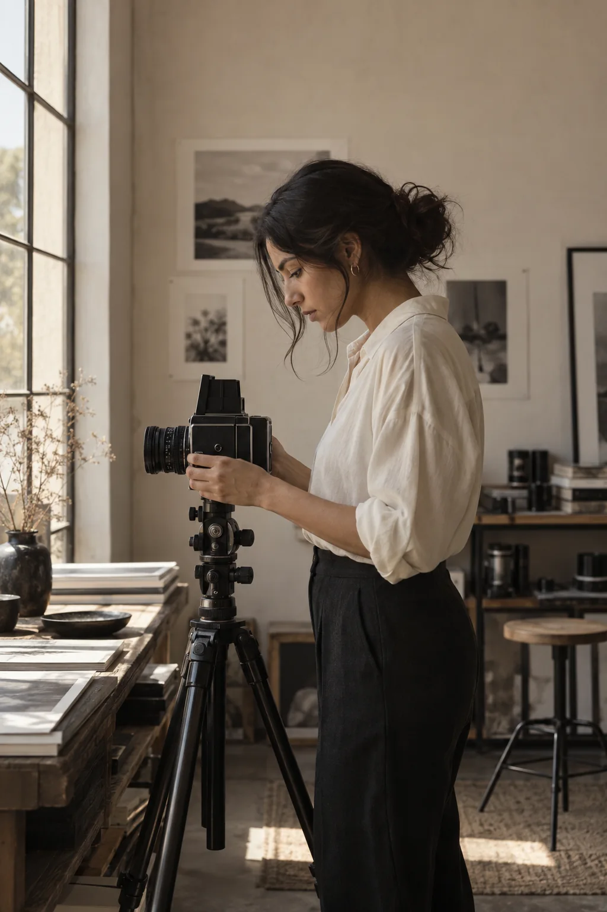

Misión
Crear fotografías honestas y cuidadas que conserven emociones, vínculos y momentos importantes de cada persona.
SOBRE MÍ
La fotografía es mi manera de detener el tiempo y hacer visible lo que sentimos.

LUZ · EMOCIÓN · MEMORIAHOLA, SOY CATALINA
Soy Catalina Villamizar, fotógrafa en Bucaramanga. Me inspira la conexión entre las personas, la luz natural y esos instantes que pasan rápido, pero merecen quedarse.
Mi trabajo combina dirección cuidadosa y espontaneidad. Quiero que cada persona se sienta cómoda frente a la cámara y encuentre en sus fotografías algo más que una imagen bonita: una historia que reconoce como suya.
MI PROPÓSITO
Crear fotografías honestas y cuidadas que conserven emociones, vínculos y momentos importantes de cada persona.
Construir un estudio reconocido por su sensibilidad visual, su trato cercano y su capacidad de contar historias auténticas.
Empatía, respeto, creatividad y atención al detalle en cada encuentro y en cada imagen entregada.
CÓMO TRABAJO
Un proceso claro para disfrutar la experiencia tanto como el resultado.
Planeemos tu sesiónEscucho tu historia y definimos juntos el estilo y los detalles.
Buscamos la luz adecuada y dejamos espacio para lo espontáneo.
Selecciono y preparo imágenes para que las vuelvas a vivir.
SIGUIENTE CAPÍTULO